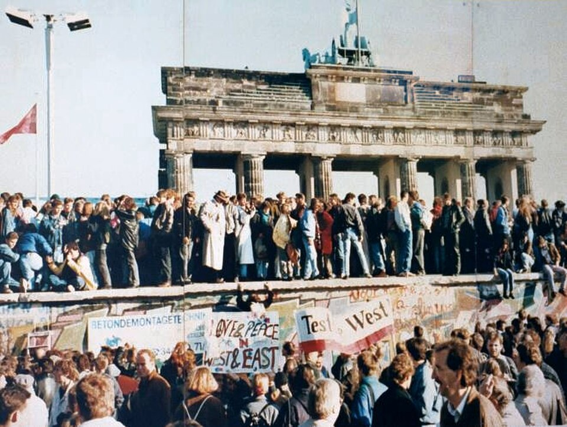

Cayó el Muro de Berlín
El gobierno de Alemania Oriental anunció que sus ciudadanos pueden salir libremente y decenas de miles de berlineses se lanzaron sobre los pasos fronterizos. La multitud trepó al muro y baila sobre él. Los guardias, desbordados, abrieron las barreras.

El muro que desde agosto de 1961 partía en dos esta ciudad, y con ella al mundo entero, dejó de existir esta noche como frontera aunque siga en pie como cemento. Todo se precipitó al caer la tarde, cuando el vocero del gobierno comunista, Günter Schabowski, leyó ante las cámaras una disposición que autoriza los viajes al exterior sin requisitos. Preguntado desde cuándo regía, revolvió sus papeles y improvisó las palabras que voltearon el muro: «Según entiendo... de inmediato».
En minutos, miles de berlineses orientales se agolparon frente a los pasos fronterizos exigiendo cruzar. Los guardias, sin órdenes y sin ganas de disparar contra su propio pueblo, levantaron las barreras en Bornholmer Strasse cerca de las once de la noche, y detrás cayeron todas. Del otro lado los esperaban con abrazos, champaña y llantos. A esta hora, jóvenes de las dos Alemanias bailan montados sobre el muro frente a la Puerta de Brandeburgo, y ya se escuchan los primeros martillazos de quienes se llevan un pedazo de la historia en el bolsillo.
El muro había nacido también en una sola noche, la del 13 de agosto de 1961, cuando la ciudad despertó cosida por el alambre de púas y las cuadrillas levantaron a toda prisa el cemento que partió familias, noviazgos y hasta cementerios. Veintiocho años dieron para el repertorio completo de la desesperación: túneles cavados a cuchara, fugas en globo casero, saltos desde las ventanas de la Bernauer Strasse antes de que las tapiaran, y más de un centenar de muertos en la franja que los propios berlineses llamaban de la muerte, como aquel muchacho, Peter Fechter, que en el 62 quedó desangrándose al pie del muro mientras dos mundos lo miraban sin atreverse a cruzar.
Las escenas de esta noche compensan décadas: los pequeños Trabant orientales desfilando entre dos hileras de occidentales que golpean los techos como tambores de bienvenida, desconocidos que se abrazan llorando y preguntan por calles que conocen sólo de oídas, la avenida Kurfürstendamm convertida en carnaval a medianoche y guardias que hace una semana tenían orden de tirar posando ahora para las fotos, superados por una historia que dejó de necesitarlos. En los primeros cruces todavía hubo funcionarios sellando pasaportes por puro reflejo; a la madrugada ya nadie sellaba nada. Berlín occidental se quedó sin flores y sin champaña: se regalaron enteras.
La noche de Berlín corona un año en que el bloque soviético se deshace sin que Moscú mueva sus tanques: Polonia votó, Hungría abrió sus alambrados, y las plazas de Leipzig y Dresde llevaban semanas coreando «nosotros somos el pueblo». El muro se cobró en veintiocho años más de un centenar de muertos que intentaron cruzarlo. Esta noche lo cruzan decenas de miles riendo. Pocas veces la historia concede una imagen tan nítida de su propio vuelco.